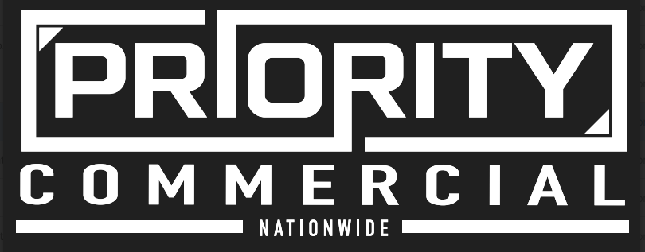

Priority Commercial Nationwide
Drive it
yourself.
Follow the demo on your own phone while it runs on the big screen.
No app, no login.
1
Point your camera at the code
2
Tap the link that pops up
3
Pick a demo and start driving
aaronf-lab.github.io
/three-left-turns
NDA inner circle · sanitized data only — no client information